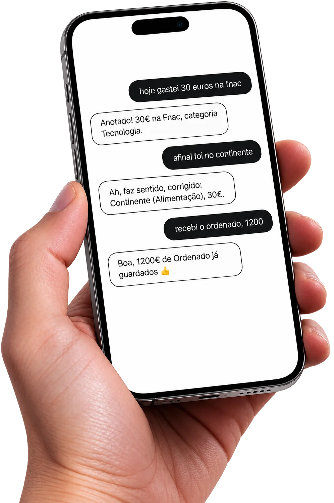
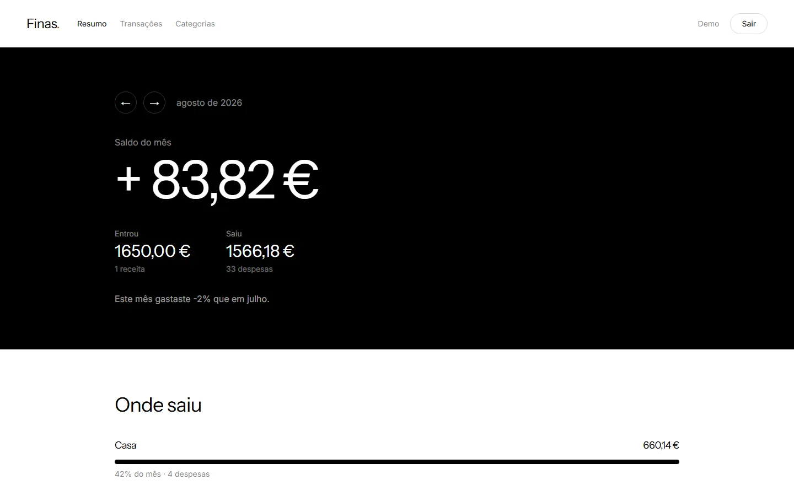
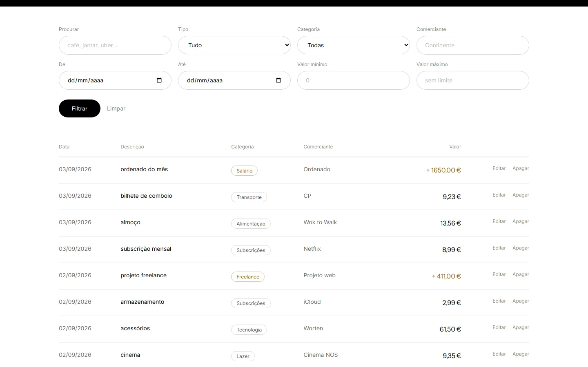

Despesas pessoais, pelo Telegram
Mandas uma mensagem ao bot, tipo "30€ na Fnac", e ele percebe o valor, o sítio e a categoria. Fica tudo guardado e organizado numa dashboard, sem apps para abrir nem formulários para preencher.
Projeto open source. Por agora, o acesso ao bot é dado a pedido.

Toda a gente já tentou: uma app de finanças, uma folha de Excel, notas no telemóvel. Ao fim de duas semanas estava esquecida. Não foi falta de vontade, foi porque cada despesa pedia cinco passos.
Numa app normal
No Finas
Escrever uma frase.
O Finas fica onde já estás, no Telegram. Registar uma despesa demora o mesmo que mandar uma mensagem.
Como escreverias a um amigo: "jantar com a malta 45€" ou "recebi o ordenado, 1200". Sem campos nem menus.
Tira da frase o valor, o sítio, a data e a categoria, e diz-te o que guardou. Se errou, corriges por texto: "afinal foi no Continente".
Na dashboard tens o saldo do mês, os gastos por categoria e a evolução dos últimos meses.
O Telegram é só onde escreves. Para ver o quadro todo, pedes um código ao bot e entras na dashboard, sem password.


O resumo do mês e a lista de movimentos, na app a sério.
O código do Finas é aberto. Podes ler tudo, correr na tua máquina ou alojar a tua própria versão, com o teu bot e a tua chave de IA.
Por agora o Finas corre numa instância pessoal, por isso dou acesso ao bot a quem pedir. Manda-me mensagem e eu trato do resto.
Estás a recrutar ou queres algo parecido para a tua empresa? .